OpenAI - klucz API, logowanie¶
OpenAI to niezależna organizacja badawcza zajmująca się sztuczną inteligencją (AI). Została założona w grudniu 2015 roku z misją promowania i tworzenia przyjaznej dla człowieka sztucznej inteligencji na korzyść całej ludzkości.
Nie wiem gdzie wygenerować swój klucz API¶
- Zaloguj się do platformy poprzez link.
-
Po zalogowaniu przejdź do zakładki
Dashboard.
-
Następnie udaj się do sekcji
API keys.
-
Kliknij na przycisk
Create new secret keyi stwórz swój pierwszy klucz API.
Mam problem z zalogowaniem się do platformy OpenAI¶
Jeśli masz problem z zalogowaniem się do platformy OpenAI, spróbuj zalogować się za pomocą konta Google. W tym celu:
- przejdź do panelu logowania,
-
kliknij przycisk
Continue with Google,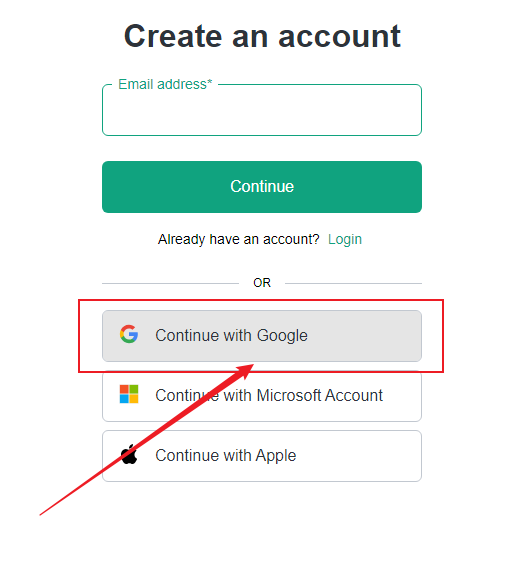
-
wybierz konto Google, z którego chcesz się zalogować.
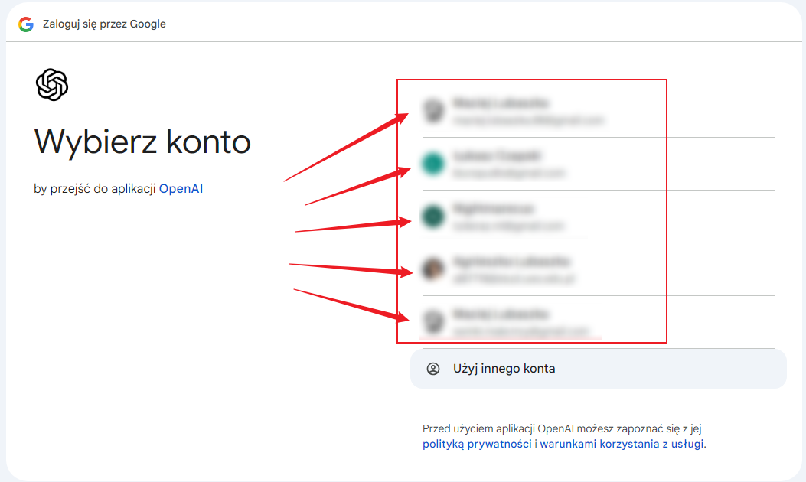
Jak skonfigurować Organization Name w platformie OpenAI¶
Podczas tworzenia konta w platformie OpenAI konieczne jest skonfigurowanie nazwy organizacji. Oto jak to zrobić:
-
Po zalogowaniu do OpenAI, jeśli pojawi się ekran powitalny, kliknij przycisk
Start buildingw prawym górnym rogu strony.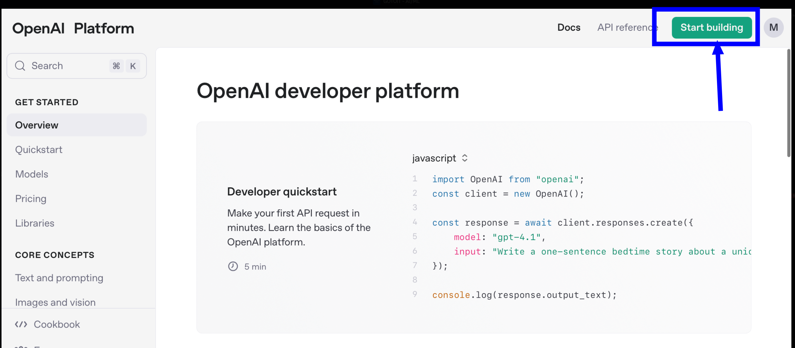
Uwaga: W tej lekcji wideo ten proces jest opisany od czasu 3:23.
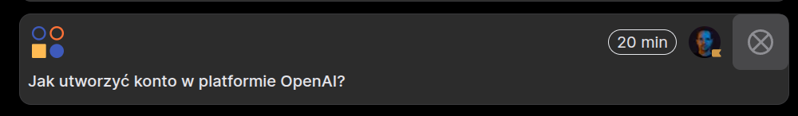
-
Na ekranie tworzenia organizacji:
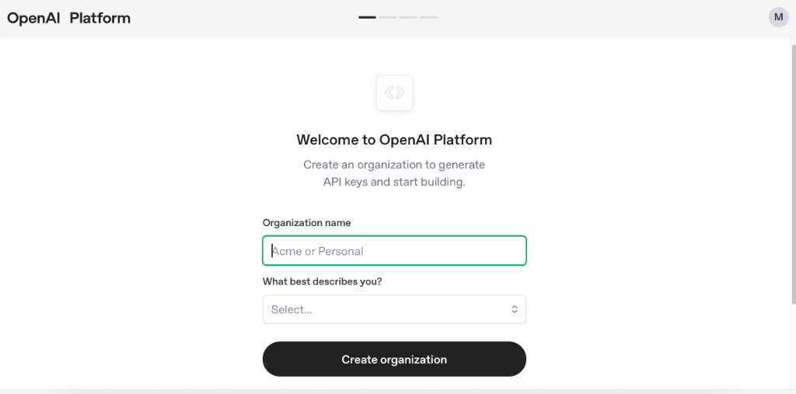
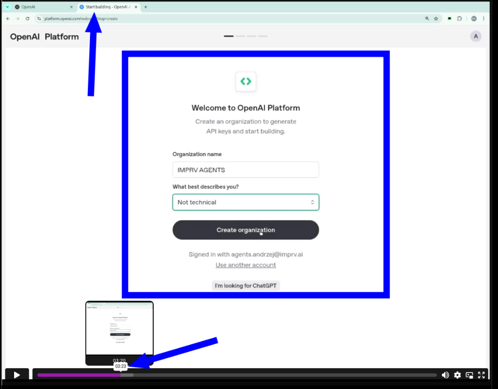
-
W polu
Organization namewpisz nazwę, pod którą będą widoczne wszystkie Twoje zasoby. To nazwa tylko dla Ciebie, możesz wpisać dowolną. - W polu
What best describes you?wybierz opcjęNot technical -
Kliknij przycisk
Create organization -
Po utworzeniu organizacji, platforma przeprowadzi Cię przez kilka dodatkowych kroków:
-
Na ekranie
Invite your teamwybierz opcjęI'll invite my team later -
Na ekranie
Make your first API callwybierz opcjęI'll do this later -
Na ekranie
Add some API creditswybierz opcjęI'll buy credits later -
Po wykonaniu tych kroków znajdziesz się na stronie głównej platformy OpenAI dla deweloperów, gdzie możesz zacząć korzystać z API.
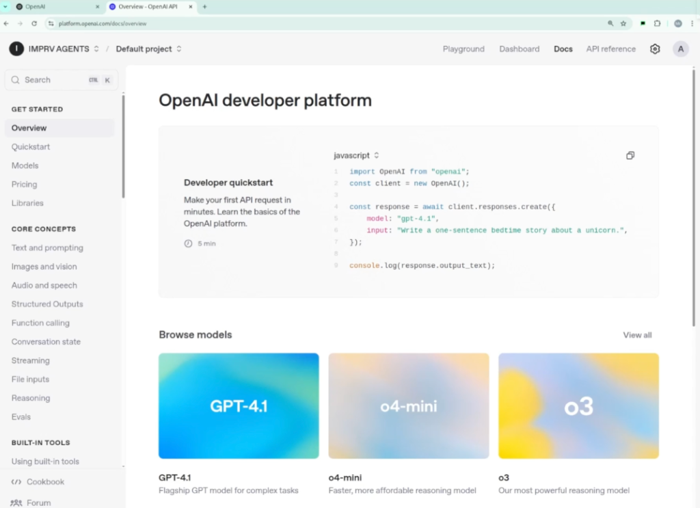
Błąd "Forbidden - perhaps check your credentials?" przy generowaniu obrazów z modelem gpt-image-1¶
Jeśli podczas próby generowania lub edytowania obrazów za pomocą modelu gpt-image-1 otrzymujesz błąd podobny do poniższego:
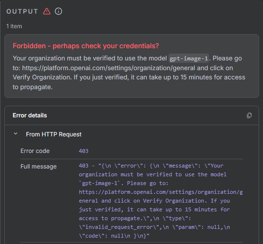
Przyczyna problemu:¶
Model gpt-image-1 wymaga zweryfikowanej organizacji w OpenAI. Błąd 403 - Forbidden z komunikatem o sprawdzeniu credentials wskazuje, że Twoja organizacja nie została jeszcze zweryfikowana przez OpenAI.
Rozwiązanie:¶
Krok 1: Rozpoczęcie procesu weryfikacji
-
Przejdź do ustawień organizacji: https://platform.openai.com/settings/organization/general
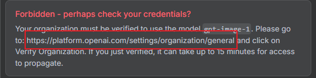
-
W sekcji "Verifications" kliknij przycisk "Verify Organization"
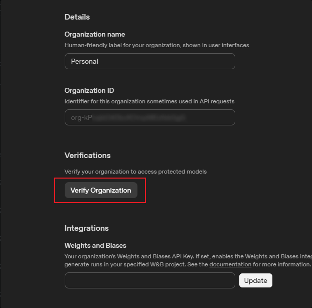
Krok 2: Weryfikacja tożsamości przez Persona
-
Zostaniesz przekierowany do systemu weryfikacji Persona. Kliknij "Start ID Check"
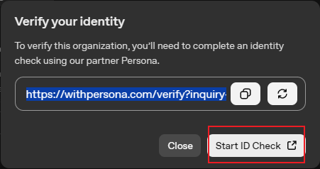
-
Zapoznaj się z informacjami o przetwarzaniu danych i zaznacz zgodę na przetwarzanie danych biometrycznych. Następnie kliknij "Begin verifying"
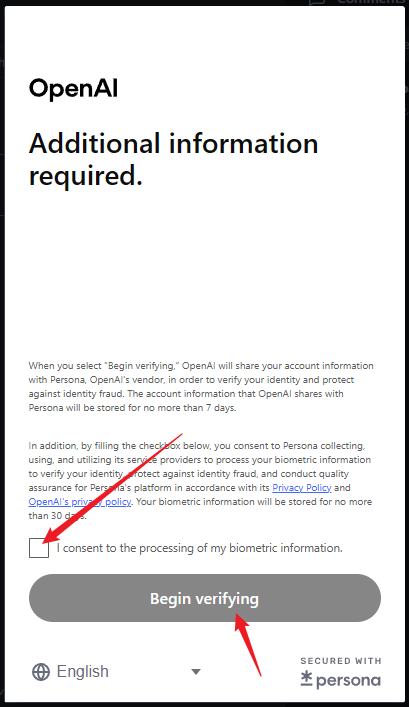
Krok 3: Weryfikacja na urządzeniu mobilnym
-
System wyświetli kod QR do skanowania telefonem. Zeskanuj kod aparatem telefonu
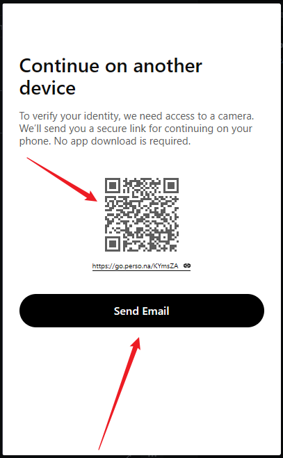
-
Alternatywnie możesz kliknąć "Send Email" aby otrzymać link weryfikacyjny na email
Krok 4: Proces weryfikacji
⚠️ Informacje o bezpieczeństwie procesu weryfikacji¶
Uwagi dotyczące bezpieczeństwa
Proces weryfikacji wymaga podania wrażliwych danych osobowych:
Co będzie wymagane:
- Zdjęcie dokumentu tożsamości (dowód osobisty, paszport lub prawo jazdy)
- Zdjęcie Twojej twarzy (selfie) w celu weryfikacji biometrycznej
- Podstawowe dane osobowe
Środki bezpieczeństwa:
- OpenAI używa zewnętrznego dostawcy (Persona) do weryfikacji tożsamości
- Dane są przetwarzane zgodnie z polityką prywatności Persona i OpenAI
- Informacje biometryczne są przechowywane maksymalnie 7 dni zgodnie z polityką
Potencjalne ryzyka:
- Przesyłanie dokumentów tożsamości przez internet zawsze niesie pewne ryzyko
- Dane mogą być wykorzystane przez OpenAI do innych celów zgodnie z ich polityką prywatności
- Brak możliwości cofnięcia weryfikacji po jej przeprowadzeniu
Rekomendacje
- Przeczytaj uważnie politykę prywatności przed rozpoczęciem weryfikacji
- Upewnij się, że korzystasz z oficjalnej strony OpenAI
- Rozważ czy korzystanie z modelu
gpt-image-1jest niezbędne dla Twoich potrzeb - W przypadku wątpliwości skonsultuj się z ekspertem ds. ochrony danych
Krok 5: Potwierdzenie weryfikacji
Po pomyślnym przejściu przez proces weryfikacji tożsamości, status Twojej organizacji zmieni się na "Organization Verified"
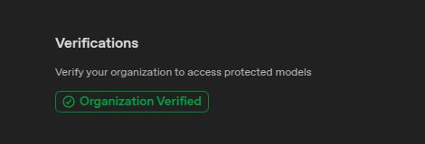
Czas propagacji zmian¶
Ważne
Po pomyślnej weryfikacji może upłynąć do 15 minut zanim dostęp do modelu gpt-image-1 zostanie aktywowany. Jeśli po tym czasie nadal otrzymujesz błąd, spróbuj:
- Odświeżyć stronę platformy OpenAI
- Sprawdzić status weryfikacji w ustawieniach organizacji
- Skontaktować się z pomocą techniczną OpenAI jeśli problem persystuje